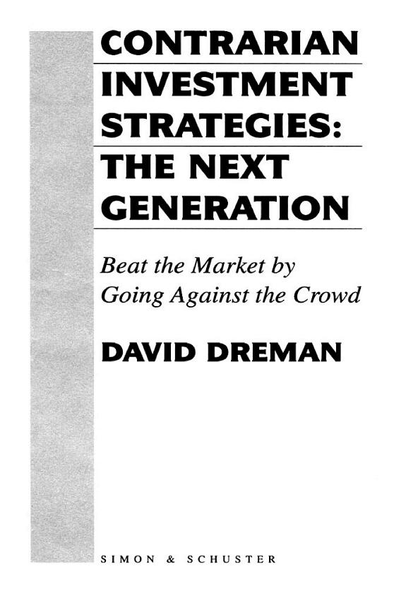

戴维·德雷曼（David Dreman）在20世纪60年代美国"沸腾岁月"的成长股热潮中进入华尔街。他后来回忆，University Computing、National Student Marketing等概念股数年内上涨数倍乃至数十倍，崩盘时又普遍跌去八九成；自己虽然没有破产，也吐回了大部分账面收益。这段经历把他的注意力从预测热门行业转向投资者预期。1977年的《Psychology and the Stock Market》和1982年的《The New Contrarian Investment Strategy》先后形成框架，1998年Free Press出版《Contrarian Investment Strategies: The Next Generation》，ISBN为978-0-684-81350-9，以464页篇幅加入更多心理学研究和1970年代至1990年代的数据。海天出版社2001年简体中文版正式书名为《逆向投资策略》，没有保留英文副标题中的"新一代"；2012年的《Contrarian Investment Strategies: The Psychological Edge》是金融危机后另一次大修订，也不是同一本书。
德雷曼研究的不是简单反着大众买，而是预期差。他把股票按市盈率、股价现金流比、市净率和股息率分组，主张购买相对估值最低或收益率最高的一组，再检查公司规模、财务强度和盈利趋势。全书列出四十一条规则；第14条写得很具体："Buy solid companies currently out of market favor"，衡量方式就是低市盈率、低股价现金流比、低市净率或高股息率；第20条进一步要求在同一行业内买最便宜的股票，以免把银行、公用事业与软件公司的正常估值差异误当成公司异常。第21条给出卖出条件：当股票的市盈率或其他逆向指标接近市场平均，就换到新的冷门股。德雷曼同时反对频繁交易和热门IPO，建议给暂时不奏效的持仓约两年半至三年时间，但若长期基本面明显恶化则立即退出。这些是相对估值纪律，不是"跌得多就买"。
核心实证是盈余意外的不对称反应。市场对高估值公司抱有很高预期，坏消息会同时打击盈利预测和估值倍数；低估值公司已被假定前景糟糕，负面意外造成的额外损害较小，正面意外却可能迫使价格重新评估。德雷曼与迈克尔·贝里（Michael Berry）对1973至1996年美国股票的研究，比较了低、高市盈率、市净率和股价现金流比组合，书中据此论证"最差"股票遇到正面意外时反应更强，"最好"股票遇到负面意外时损失更重。与此相关的学术研究还发现，依赖分析师偏乐观的长期增长预测，可以解释逆向组合额外回报的一部分，而不是全部。他在序言中说："Psychology is the necessary link required to activate the contrarian strategies we will examine."这里的心理学不是性格测试，而是卡尼曼、特沃斯基、保罗·斯洛维克等人研究的过度自信、代表性偏差与群体压力：方法容易理解，真正困难的是在客户、同事和新闻都反对时仍能执行。
这套论证也有边界。四个估值指标高度相关，历史回测不能自动排除行业集中、破产风险、交易成本和样本选择；作者自己也明说这些策略是相对的，不能告诉投资者整个市场何时见顶或见底。高股息还要检查派息率和现金流，账面价值则要排除已经减值的资产。1998年版使用的会计制度、利率环境和股票样本与今天不同，照抄阈值并不等于复现结果。更稳妥的读法，是把书拆成两层：第一层用低估值和财务质量建立候选池，第二层记录市场共识及其隐含预期，等待事实与共识发生偏差。这样，"逆向"就不再是姿态，而是一项可检验的判断——价格究竟预设了多坏的结果，以及公司是否有资产负债表撑到预期修正。